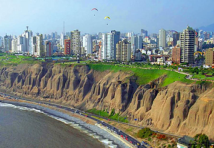
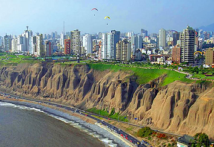

The hosting institution was the Pontifical Catholic University of Peru (Pontificia Universidad Católica del Perú, PUCP). The goal of this World Congress is to promote dialogue concerning various crucial philosophical issues in today’s world and to explore the role of philosophy in our complicated times. The world we live in today faces many urgent issues that require sustained and productive cross-cultural dialogue. The ideals of global peace and security remain elusive while a sense of uncertainty pervades the dominant institutions of contemporary life. Traditional human values underlying our social and political institutions are continually transformed by new developments in information technology, digitalization, artificial intelligence, and the drive for economic efficiency. Although the globalization of trade and technology has brought people together as never before, our differing outlooks, habits, and ideologies continue to separate us. As philosophers, we must neither shut ourselves in ivory towers nor indulge ourselves with armchair philosophy. We must face the issues that define our moment in history. Our times demand that we, as philosophers, work to foster intellectual insight, imagination, social responsibility, and justice. Therefore, the International Society for Universal Dialogue issues a call for papers and proposals for panels for the 12th World Congress of ISUD on the general theme of “Philosophy in an Age of Crisis: Challenges and Prospects”, with the following sub-themes:
 
